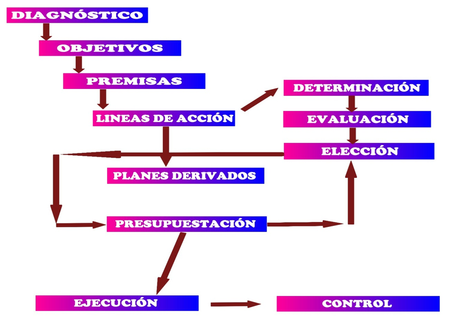

La planificación se justifica ante la necesidad que tiene la empresa de planear cual va a ser su futuro, con el ánimo de diagnosticar, prever y controlar la situación de la empresa.

El proceso mediante el cual se desarrolla la planificación se divide en distintas etapas.
Etapa 1ª: Diagnóstico de la situación de partida.
Consiste en realizar un diagnóstico de la situación actual, tanto en la empresa como en su entorno. En el supuesto de que el diagnóstico sea inadecuado se puede caer en el error de plantear un plan inadecuado.
Etapa 2ª: Determinación y fijación de objetivos.
Sirve para determinar el punto de llegada y deben responder a los valores tipo SMART que ya se han mencionado. Además, deben presentarse jerarquizados e indicarse los responsables para cada uno de ellos al tiempo que deben ser conocidos por todos los miembros de la organización.
Etapa 3ª: Establecimiento de premisas.
Debe llevarse a cabo para garantizar la coherencia del plan. Se trata de interpretar pronósticos acerca de diferentes variables que pueden ser controladas desde la propia empresa.
Por ejemplo, sería inútil realizar un plan con premisas que hablen de un descenso de los costes de personal si después su cumplimiento implica dejar puestos sin cubrir. Sin embargo, en momentos de crisis, si se podrían identificar técnicas de cobertura de los turnos de manera que se cumpla con las cargas de trabajo en momentos puntuales.
Etapa 4ª: Determinación de las líneas de acción.
Una vez elaborado el diagnóstico, fijados los objetivos y establecidas las premisas, corresponde determinar las vías de actuación que permitan alcanzar esos objetivos.
Una empresa puede establecer diferentes líneas de actuación o, cuando menos, proponer diferentes para su evaluación.
Etapa 5ª: Evaluación de las líneas de acción establecidas.
En este momento, y dado que se pueden haber establecido diferentes líneas de actuación, corresponde realizar una evaluación pormenorizada de cada una de ellas, lo que permitirá conocer sus costos, logros que suponen, riesgos que conllevan, dificultades o facilidades para su ejecución y desarrollo, …
Etapa 6ª: Elección de una línea de acción.
Una vez determinadas y evaluadas las líneas de actuación, corresponde decantarse por una de ellas. La consecuencia será la plasmación documental de su decisión en el plan que deba ejecutarse.
Etapa 7ª: Elaboración de planes derivados.
Todo lo mencionado hasta ahora aborda lo que sería un Plan General o Plan Básico. Los planes derivados son planes departamentales que permiten sustentar ese Plan General. Planes derivados pueden ser los planes de compras, contratación o promoción, por citar algunos.
Etapa 8ª: Presupuesto del proceso.
Es la culminación de la primera fase de la planificación. Insistiendo sobre el valor de este concepto de presupuesto, supone la valoración o cuantificación de todo el proceso de planificación. Lógicamente, es una expresión numérica del plan.
Existiría una segunda parte, que sería la ejecución del plan junto con una tercera, en la que corresponde el control de la misma, que será estudiado posteriormente.